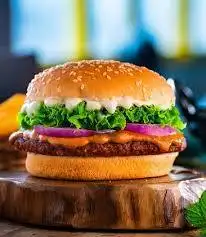

back
This is the recipe for burger

Description:
A hearty veg burger features a crispy, pan-fried patty made from mashed black beans, carrots, onions, and spices, sandwiched between soft, toasted buns. Layered with fresh lettuce, juicy tomatoes, crunchy onions, and creamy sauces like mayo or spicy ketchup, it delivers a perfect balance of texture and flavor in every bite. It's a wholesome, satisfying treat that’s both filling and full of flavor.
Ingredients
- Boiled beans or mashed veggies (like potatoes, carrots)
- Breadcrumbs
- Onion, garlic, spices
- Burger buns
- lettuse, tomatoes, onion slices
- Cheese (optional)
- ketchup, mayo, sauce
Steps
- Mash boiled beans or vegetables and mix with breadcrumbs, chopped onion, garlic, and spices.
- Shape into patties and cook them on a pan until golden brown on both sides.
- Toast burger buns lightly with butter.
- Place lettuce, tomato, onion, and the patty on the bun. Add cheese if using.
- Spread ketchup, mayo, or sauce as desired, then close the bun and serve.